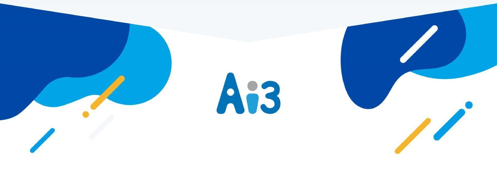

Qbi CRM 智能客服系統
網頁、LINE、Meta、電話、Email 與簡訊集中管理；智能派工、知識庫與報表讓主管看得見每一條服務的品質。

便利、輕快、快速：從小團隊到集團都適用的企業級客服系統。
話務控制、自動語音服務、營業時間設定、智能派工、來電即開客戶資料，所有互動完整保存。
- 通路：LINE、Meta（Facebook／Instagram）、網頁聊天、電話 CTI、Email、傳真、簡訊、ICR 文字互動選單
- 管理：權限管理、服務後紀錄、主管監看、完整互動保存、管理報表
- 流程：可設定的企業服務流程，智能派工減少人員閒置
- 部署：雲端部署，降低維護成本；電子看板顯示排隊狀態
八個模組
客服模組與行銷模組共用同一份客戶資料。
服務追蹤
案件建立、流程追蹤、逾時提醒
知識庫
分類、文件管理、內容時效管理、討論
報表分析
服務績效、滿意度報表、客製報表
客戶資料庫
電話行銷、名單管理
貼文自動回覆
排程貼文、自動回覆、比對演算法
行銷推播
比對、名單管理、自動推播
三個優勢
統一平台、生產力、銷售。
統一平台
語音與文字客服在同一套系統處理，客戶資料與互動紀錄集中。
提升生產力
智能派工、知識庫與報表，讓客服更快結案、主管看得見品質。
帶動銷售
客戶資料庫、貼文自動回覆與行銷推播，服務之後接著再行銷。

三個核心概念
Qbi CRM 的設計以企業需求為導向：互動、流程、數據。
親切互動 Interactive CRM
以客戶為核心，重視互動價值，完整記錄從行銷、銷售到服務的每個接觸點。
流程管理 Operational CRM
以流程為體現，制定順暢的工作流程與績效指標，協助組織達成目標。
數據分析 Analytical CRM
以客戶資料為重要價值，進行有效分析應用，支持企業行銷決策。
重點功能
全通路時代，由內到外 360 度客戶接觸管理。
客戶互動資料整合平台
電話、APP、Webchat、FB、實體機器人等管道，都能身份識別、用戶歸戶、保留完整客戶歷程。
客服效率倍增
第一線與第二線技能分群分派、快速回覆選單、知識庫搜尋與 FAQ 引用。
多媒體檔案傳送
照片、圖片、Word／PDF 文件、語音、視訊、傳真。
數據分析
客戶紀錄、服務紀錄報表管理與圖表應用。
高規格內部安全控管
敏感詞警示監控、群組管理機制、真人監控。
金融業標竿資安級管理
採 ISO 27001 稽核標準，用戶權限分級管理。
六大模組，CRM 全方位應用
組織或業務擴展時不需要深度技術，透過模組化就能調校，節省開發成本與導入時間。
內部流程管理
自定義工作流程，以專案管理概念由上到下分解工作：行銷計畫、服務請求、業務商機、專案；從行銷、銷售到服務，記錄每一筆接觸與交易，控管費用與工時，目標管理與績效結合。
客戶進線即呈現完整互動軌跡
CTI 整合、Softphone、話術提醒、進線流程、服務軌跡、來電紀錄。依來電號碼或語音選項轉接對應技能群組；10 天內曾來電可直接分配群組；優先分配最後服務過的三人；24 小時內同號碼視為同一人，值機畫面立即帶出紀錄。
追蹤控管後送派工進度
服務請求建立、後送、審核、管理，制定各項服務 KPI 指標，有效追蹤整體服務品質，展現企業對客戶的承諾。
活化企業最珍貴的無形資產
知識新增、編輯、審核、公告、訂閱、討論；編輯支援 HTML、YouTube 嵌入、Word／圖檔貼上，並有版本管理、多國語言與修改日誌。
行銷關懷主動出擊
行銷計畫制訂、客戶名單匯入與管理、黑名單、外撥狀態與結果、預約電話、資料整合，適合電話行銷與外撥單位。
市調、滿意度與內部調查
把問卷與考試系統化，即時記錄並分析結果，用於員工或客戶的想法與滿意度調查。
兩種導入方式
從小團隊到萬人集團都能用 Qbi CRM 創造美好客戶體驗。
想讓你的客服也會說話？
留下需求，顧問會在一個工作天內回覆，帶你評估雲端訂閱或專案客製哪一種比較適合。